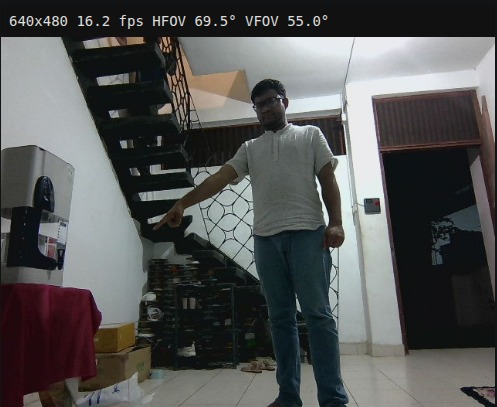

Closing the Deictic Loop
Pointing is brief. VLA inference is slow.
Pointing is brief: about 1–2 s, and tied to the pose the robot had when it saw it.
VLA inference is slow. If the robot is still turning and keeps the ray in its body frame, the ray ends up wrong by exactly the rotation Δθ made during inference — a geometric identity, not noise.
Research gap. No existing system combines pointing input, VLA-driven quadruped locomotion and a robot→human grounding channel.
Un-anchored error ≡ |Δθ|; miss e ≈ d·tan Δθ. LEGS-POMDP: 14.4° ≈ 1.3 m off at 5 m.
What we add
Geometric identity: an un-anchored pointing ray is off by exactly |Δθ|, the rotation during inference.
Gesture memory buffer: rays anchored in the world frame (TF2) at capture, re-projected at use.
Bidirectional grounding: the robot turns, asks, and takes a confirm or a correction.
Gesture-grounding metrics with a 1–5 s latency sweep.
Lab and simulation setups

(a) Captured frame: user pointing (640×480, HFOV 69.5°)
(b) Lab setup — Unitree Go2 with RGB-D camera, Velodyne LiDAR and Jetson AGX Orin; user points from distance d
(c) Simulation — Gazebo + CHAMP + HuNavSim pedestrians
Sweeps: distance · target layout · injected latency τ = 1–5 s
A fast gesture path feeding a slow VLA
Recognition
Landmarker
hypotheses ×4
(scale-free FSM)
anchor at capture
rW = TWC(t0) rC
re-project at use
rt = TBW(t) rW
draw rt on It
reads live frame
+ ray overlay + ℓ
→ action a
e.g. “turn right 30°”
Perceived → Interpreted →
Committed → Executing
CHAMP → Unitree Go2
turn · approach · stop
q: “Is this the direction?”
u: “No — turn more right.”
RGB-D video + speech
From a point to a stop in six steps
User points at a box and says “go to that box”.
Hold detected; pointing frame f* kept, ray anchored in the world frame.
NaVILA reads the live frame with rt drawn in and picks the box.
Robot turns to face its pick and asks “Is this the direction?”
“No, turn more right.” Robot adds Δψ, re-turns and asks again.
“Yes.” Robot walks to the box and stops in front of it.
The robot shows what it understood, then asks
hold detected,
ray anchored
VLM picks
a target
turn to face it,
ask q
approach & stop
re-turn by Δψ
Robot → user: turns its body to show what it understood, then asks by voice.
User → robot: “yes”, a relative correction, a new instruction, or a fresh point.
Four metrics
Deictic heading error
final heading vs true target bearing (°)
Instruction capture rate
pointing events caught (%)
Target selection accuracy
commits to the right object (%)
Latency-conditioned degradation
all metrics vs injected τ = 1–5 s
Compare: body-frame ray (naïve) vs world-anchored ray (ours).
Where: HuNavSim in Gazebo, then the real Go2.